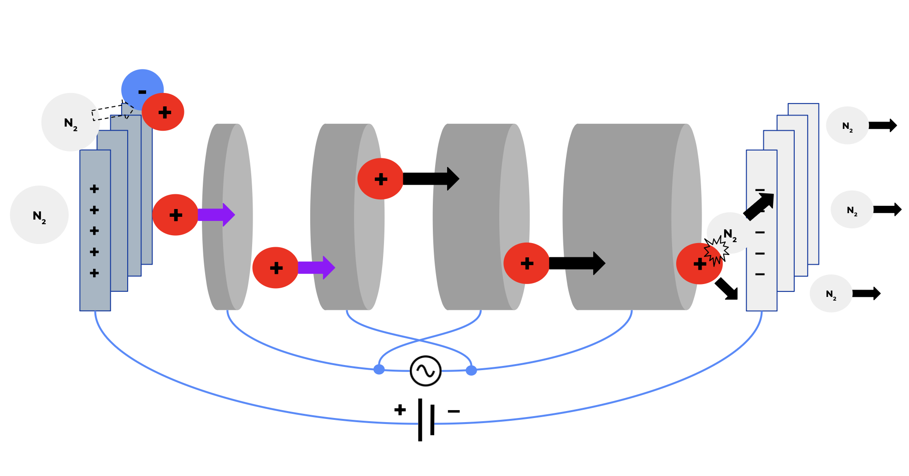

Objective
Ionic thrusters are a form of electric propulsion that generate thrust by accelerating ions using
electric fields. Compared to traditional chemical rockets, ionic thrusters are significantly more
efficient. However, they generate low levels of thrust and so are only used in outer space.
The goal of this project was to investigate the addition of AC technology to ion thrusters in the
hopes of increasing thrust and thrust efficiency for potential terrestrial applications. The project
was broken down into 4 stages, with simulation and design of both DC and AC thrusters.
Theory
The project was approached from first principles, starting with the physics of ion propulsion.
The slides to the left outline the underlying mechanisms and theory that govern ionic thrusters in a
terrestrial setting.
The slides also showcase possible AC modifications, including pulsing the DC voltage to generate
more ions while keeping the system efficient, as well as using a linear accelerating to boost the
thrust generated from the ions.
Test Stand Design
To derisk the development of the DC apparatus, a simulation was first developed. Linking together
the equations from the theory, a Jupyter Notebook was created to simulate the expected thrust and
efficiency of the DC thruster for various geometries and voltages.
Initial sketches were then created for the test stand. Because the ion thruster operates at high
voltages (up to 30kV), safety was a primary concern. The design was iterated on multiple times to
ensure that the high voltage components were properly insulated and shielded. Various sketches of
the test stand design and the safety circuitry are shown below.
Results
Ultimately, the project was shelved due to cost and safety concerns surrounding the high voltages. However, the project doesn't go without any loss. A lot was learned about how to scope out a research project, think at a systems level, and work with high voltages.
This site is still in development